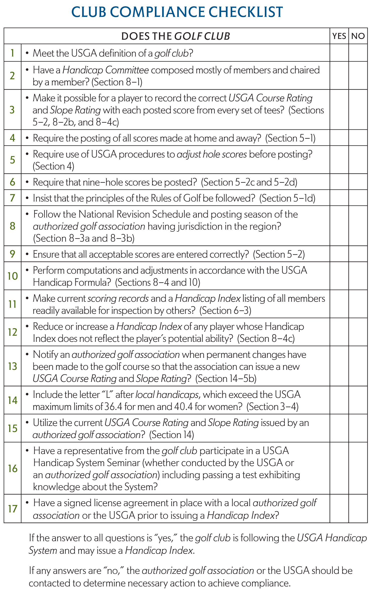

Section 8 THE HANDICAP COMMITTEE
Definitions
Within each section, all defined terms are in italics and are listed alphabetically in Section 2 - Definitions.
An essential element of the USGA Handicap System is the Handicap Committee. Each golf club or authorized golf association utilizing the USGA Handicap System must appoint a Handicap Committee to ensure the integrity of each Handicap Index it issues. This Committee must make certain that the members comply with the USGA Handicap System.
The position of handicap chairperson requires a substantial amount of time and a basic knowledge of the USGA Handicap System. The more information the handicap chairperson gives the members, the more cooperation the chairperson is likely to receive. (See Decisions 8-1/1 and 8-1/1.5.)
The Handicap Committee within the golf club is responsible for all aspects of the USGA Handicap System, including the computation of each member's Handicap Index. The Handicap Committee must verify that all acceptable scores are reported for handicap purposes, and that recorded scores are available for peer review. In addition, the Handicap Committee has the authority to make the determination if course conditions are so poor that score posting should be suspended. If score posting is suspended for an extended period, the golf club must obtain approval from its authorized golf association.
 a. Notice to Members
a. Notice to Members
It is advisable to send a notice to members before the season starts in order to outline the USGA Handicap System, to stress the importance of reporting all acceptable scores and to report the Handicap Committee's policies. The members may be advised of such matters as the following:
(i) How and where scores are returned;
(ii) If handicap cards or labels are issued;
(iii) How each Handicap Index is verified at each revision;
(iv) The handicap revision schedule as determined by the authorized golf association;
(v) The duration of any inactive season established by the authorized golf association (See Section 6-2);
(vi) How away scores are posted prior to the start of the active season;
(vii) Handicap Index adjustment responsibilities of the Handicap Committee (See Sections 8-4 and 10-3);
(viii) Penalties for players failing to return scores (See Section 8-4c(iv));
 b. Display each USGA Course Rating and Slope Rating of the Club
b. Display each USGA Course Rating and Slope Rating of the Club
The USGA Course Rating and Slope Rating from each set of tee markers should be printed on the club scorecard and posted in a prominent place at the club, preferably by means of a poster certified by the authorized golf association. The ratings should also be easily retrievable on the screen of any computer used for score posting.
 c. Displaying USGA Course Rating and Slope Rating of Area Courses
c. Displaying USGA Course Rating and Slope Rating of Area Courses
A list of each USGA Course Rating and Slope Rating of area courses should be provided by the authorized golf association and posted at the place where scores are returned. If a computer is used for score posting, the list should be made easily available for viewing on the screen.
 d. Posting Course Handicap Tables
d. Posting Course Handicap Tables
The Course Handicap Table from each set of tee markers, as issued to a golf club by the authorized golf association, must be posted in a prominent place at the club, on or near the first tee of every course at the club, and in any other place considered beneficial for assisting with the process of converting a Handicap Index to a Course Handicap. The Handicap Committee is responsible for obtaining these tables from the issuing authorized golf association and assuring their display. Each table should show the tee's Slope Rating and USGA Course Rating, as well as the corresponding Course Handicap for a player's Handicap Index.Course Handicap Tables may be obtained from the authorized golf association that issued each rating.
 e. Utilization of the Current USGA Course Rating and Slope Rating
e. Utilization of the Current USGA Course Rating and Slope Rating
A club must accept and use the USGA Course Rating and Slope Rating that has been issued by an authorized golf association. If a club disagrees with its Ratings, it may request the authorized golf association to review the Rating.
A separate USGA Course Rating and Slope Rating must be made from each set of tee markers as practicable for each gender.
 f. Examining Results of Competitions
f. Examining Results of Competitions
The Handicap Committee should examine results of competitions. If net scores of any players appear exceptional, the Handicap Committee should take appropriate action under procedures in Sections 8-4 and 10-3. (See Appendix E.) The golf club or Handicap Committee should forward exceptional tournament scores of guests to the guest's golf club or golf association.
 g. Maintaining Players' Records
g. Maintaining Players' Records
The Handicap Committee must be responsible for maintaining players' records, including prominently displaying a Handicap Index list. Current scoring records of all players in the club from the most recent revision must be available to all members and others as noted in the definition of Peer Review. It is preferable for only one Committee member to be responsible for players' records and keeping the Handicap Index of each member up-to-date.
If mathematical computations are made by a computer or computation service, the Handicap Committee still has the responsibility of reviewing the data entered into and received from the computer or computation service and applying all other procedures of the USGA Handicap System.
 h. New-Member Records
h. New-Member Records
The Handicap Committee has the responsibility for obtaining the scoring record (including USGA Course Rating and Slope Rating accompanying each score) of a new member. The Handicap Committee may seek the scoring record through the player's previous golf club, authorized golf association, or computation service, or by communicating directly with the player. If a record is unavailable, the new member must post five scores and have a handicap revision take place or have the Handicap Committee issue a modified Handicap Index in the interim period if at least five scores exist in the scoring record. (See Section 6-6 and Decision 6-1/1.)
 i. Resigned Member Records
i. Resigned Member Records
The scoring record of a member who resigns should be preserved by the former golf club or authorized golf association for at least one year in the event a new golf club may need it.
The Handicap Index of a resigned member remains valid only until the next revision date at the golf club that issued the Handicap Index. When the player joins a new golf club, See Section 6-7.
 j. Corrections in Records and Calculations
j. Corrections in Records and Calculations
The Handicap Committee must review the accuracy of scoring records and information entered by any computation service. If errors exist, the Committee must investigate and inform the authorized golf association or computation service, which must correct the scoring record as soon as practical and no later than the next revision date. The Handicap Committee must issue a corrected Handicap Index as soon as possible after a scoring error is recognized. A golf club may wish to consult the golf association or computation service for assistance. All reports must be amended to reflect the corrected information. (See Decision 5-2a/2.)
 k. Club Handicap Cards
k. Club Handicap Cards
The Handicap Committee may issue each player a handicap card or label displaying the Handicap Index. (See Section 6-4.)
 l. Cooperation With Other Committees
l. Cooperation With Other Committees
The Handicap Committee may check periodically and consult with other club Committees, including, but not limited to:
• The allocation of handicap-stroke holes on the course according to USGA guidelines (See Section 17);
• The determination if course conditions are too poor, that score posting should be suspended;
• Work with the Tournament Committee/Committee in charge of the competition to determine whether scores will be defined as tournament scores (See Section 2, Section 8-2, Section 10, and Decisions 10-3/1 through 10-3/6);
• The maintenance of playing difficulty of the course (See Section 15);
• Invocation of any Local Rule on preferred lies (See Section 7-1).
In working with other Committees, the Handicap Committee has the responsibility to provide handicap information in a timely manner.
 m. Requirements For Compliance
m. Requirements For Compliance
To determine if a golf club is complying with the USGA Handicap System, use the following checklist (see checklist):
|  |
If the answer to all questions is "yes," the golf club is following the USGA Handicap System and may issue a Handicap Index.
If any answers are "no," the authorized golf association or the USGA should be contacted to determine necessary action to achieve compliance.
The Handicap Committee at the golf club is responsible for following the revision schedule and procedures of the authorized golf association.
 a. Revision Schedule, Frequency of Revisions, and Inactive Season
a. Revision Schedule, Frequency of Revisions, and Inactive Season
A domestic golf club must follow the National Revision Schedule. Under the National Revision Schedule, each Handicap Index must be revised on the 1st and the 15th of each month.
For an international golf club, each Handicap Index must be revised no less often than once a month and no more often than once every two weeks during the active season in accordance with the revision schedule as established by the authorized golf association that has jurisdiction in its area.
Each authorized golf association may establish an inactive season for its region (see Section 6-2). If so, it must establish the dates on which the inactive season starts and ends.
These dates, along with the National Revision Schedule for Handicap Index revisions, are to be distributed to all member clubs and non-member clubs in the region.
Any non-member club of an authorized golf association must observe the National Revision Schedule and any inactive season established by the authorized golf association that has jurisdiction in its area.
A Handicap Index revised on a more frequent schedule, including one updated every time a score is posted, is not a Handicap Index, and must be identified with an "L" to show that it is a local handicap.
 b. Scores Made in Inactive Season
b. Scores Made in Inactive Season
Scores made in an area when the authorized golf association has declared an inactive season must not be accepted for handicap purposes (e.g., score made in the New York City area in December). However, scores made in an area having an active season (e.g., scores made in Florida in December) must be posted as soon as practicable.
 a. General
a. General
A player must earn a Handicap Index. No player has an inherent right to a Handicap Index without providing full evidence of ability to the golf club's Handicap Committee. A Handicap Index must be changed only as warranted by the USGA Handicap System. Only the Handicap Committee where a player maintains a handicap can adjust that player's Handicap Index. There must be no automatic increases at the beginning of a playing season or year. A Handicap Index is continuous from one playing season or year to the next. (See Decision 8-4a/1 and Section 6-1.)
 b. Penalty Scores for Failure to Post
b. Penalty Scores for Failure to Post
If a player fails to post an acceptable score as soon as practical after completion of the round, the Handicap Committee has three options:
1) Post the actual score made by the player;
2) Post a penalty score equal to the lowest/highest Handicap Differential in the scoring record;
3) Post the actual score and a penalty score
The Handicap Committee is not required to notify the player prior to posting a penalty score.
 c. Handicap Index Adjustment by Handicap Committee
c. Handicap Index Adjustment by Handicap Committee
The Handicap Committee has the responsibility of making certain that each player has a Handicap Index reflecting potential ability. Under the following circumstances, it will be necessary for the Handicap Committee to adjust the player's Handicap Index. However, the following list is not all-inclusive, and a Handicap Committee has the ultimate authority to adjust a Handicap Index under any circumstance that it feels necessary to do so. Before an adjustment becomes effective, the Handicap Committee must give the player an opportunity to explain the circumstances surrounding the proposed adjustment, either in writing or by appearing before the Committee. When an adjustment does become effective, it must be identified with the letter M, reflecting that the Handicap Committee has modified the Handicap Index (e.g., 4.9M).
Note : See Appendix B for a sample letter notifying a player of Handicap Index adjustment.
(i) Improving Faster Than The System Can React
A player recently taking up the game may improve too rapidly for a Handicap Index calculated by the standard procedure to reflect potential ability. For example, a player who is working on their game by practicing aspects of their game and/or taking playing lessons (see Decision 5-1d/1) may not have a scoring record that exhibits potential ability and may need a Handicap Index adjustment. Also, if the player's Handicap Index is only updated once a month, for example, then the Handicap Committee may consider adjusting the player's Handicap Index to account for the player's improvement within the next month.
(ii) Numerous Away or Internet Scores Change Index
If a player's Handicap Index increases by 3.0 or more strokes due to the posting of numerous away or Internet scores, and subsequent scores at the player's club clearly indicate that the increased Handicap Index is too high, the Handicap Committee must adjust the player's Handicap Index downward.
(iii) Temporary Disability
An increase in a Handicap Index must not be granted because a player's game is temporarily off or the player has discontinued play. However, an increased handicap may be given for a temporary disability. The increased handicap is not a Handicap Index, and it must be identified by the letter "L" to indicate that it is for local use. For example, a player having had recent surgery may be given a higher handicap while recovering. (See Decisions 8-4c/1, 8-4c/2, and local handicap.)
(iv) Player Manipulates Round
The Handicap Committee must adjust or withdraw the Handicap Index of a player who manipulates scores. (See Section 8-4f.) Examples of manipulating scores include the following:
(a) Posting erroneous information to the scoring record;
(b) Stopping play after 6 holes to avoid posting scores;
(c) Repeatedly playing more than one ball to avoid posting scores;
(d) Not adjusting hole scores under Section 4;
(e) Deliberately reporting more or fewer strokes than actually scored;
(f) Deliberately taking extra strokes to inflate a score.
(g) Not observing either or both of the two basic premises that underlie the USGA Handicap System (see Section 1-1)
(v) Continued violations of Section 5-1e.
The Handicap Committee is responsible for identifying and notifying a player who regularly violates any provision within Section 5-1e that such rounds are unacceptable for handicap purposes. If the player persists in violating clause(s) within Section 5-1e after being notified by the Handicap Committee, the Handicap Committee is authorized and encouraged to consider withdrawal of the player's Handicap Index.
 d. Duration of Adjustment by Handicap Committee
d. Duration of Adjustment by Handicap Committee
The Handicap Committee must determine how long a player's Handicap Index is to remain modified or withdrawn. At each handicap revision date, the Handicap Committee should compare the modified Handicap Index to the value determined by the normal computation method under Section 10-2. For example, the Handicap Committee may lift a modified Handicap Index of 4.9M, when subsequent scores posted to a player's scoring record produce a lower Handicap Index (e.g., 4.0).
 e. Tournament Performance Review
e. Tournament Performance Review
The Handicap Committee must review the reduction of a player's Handicap Index for exceptional tournament scores. The procedure for reducing a player's Handicap Index is explained in Section 10-3 and is an automatic calculation.
After each handicap revision, the Handicap Committee should re-evaluate the player's reduced Handicap Index under Section 10-3, choosing one of the following:
• Continue to allow the reduction to run its normal course, as described in Section 10-3d, or
• Further reduce the Handicap Index (See Section 10-3e), or
• Override the reduction. For example, the Handicap Committee may override, or cancel a reduction of the Handicap Index of a player who has returned, say, 50 tournament scores, and whose Handicap Index reduction was based on early scores.
 f. Handicap Index Withdrawal
f. Handicap Index Withdrawal
The Handicap Committee must withdraw the Handicap Index of a player who repeatedly fails to meet the player responsibilities under the USGA Handicap System. Before any action is taken, the player must be advised of the information available to the Handicap Committee and be invited to respond to the Handicap Committee either in writing or by appearing in person. A withdrawn Handicap Index may be reinstated under conditions set forth by the Handicap Committee. (See Decision 5-2a/4.)